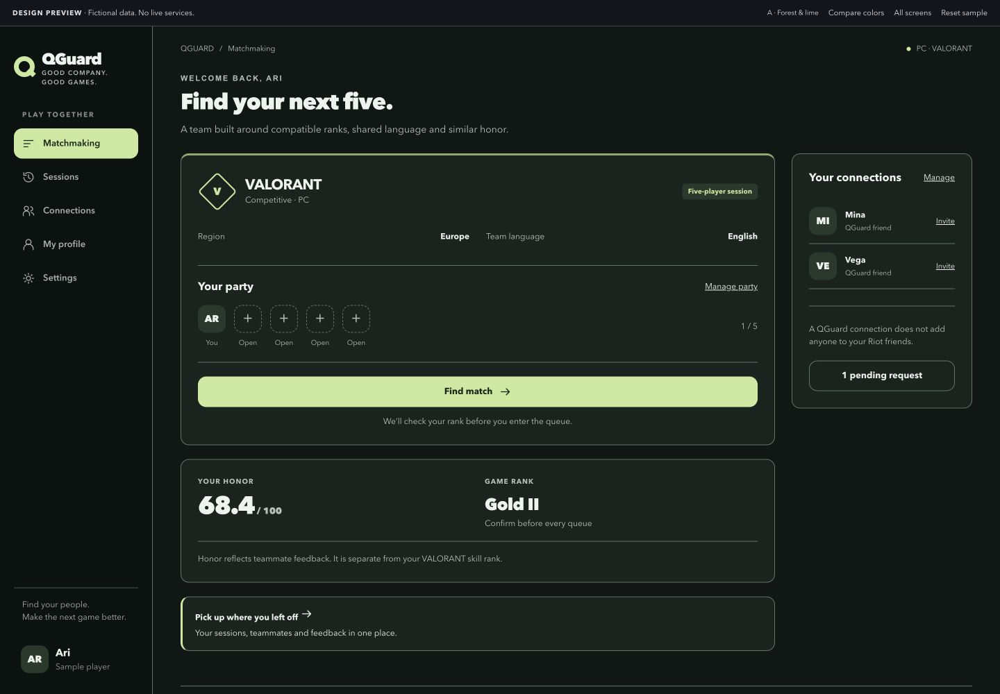
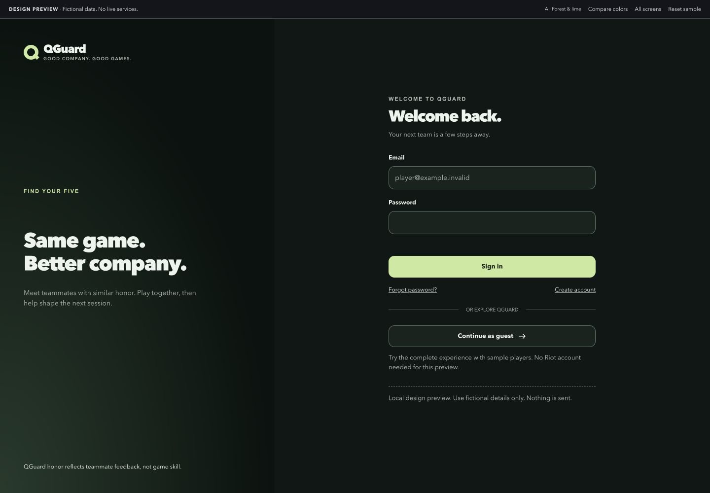
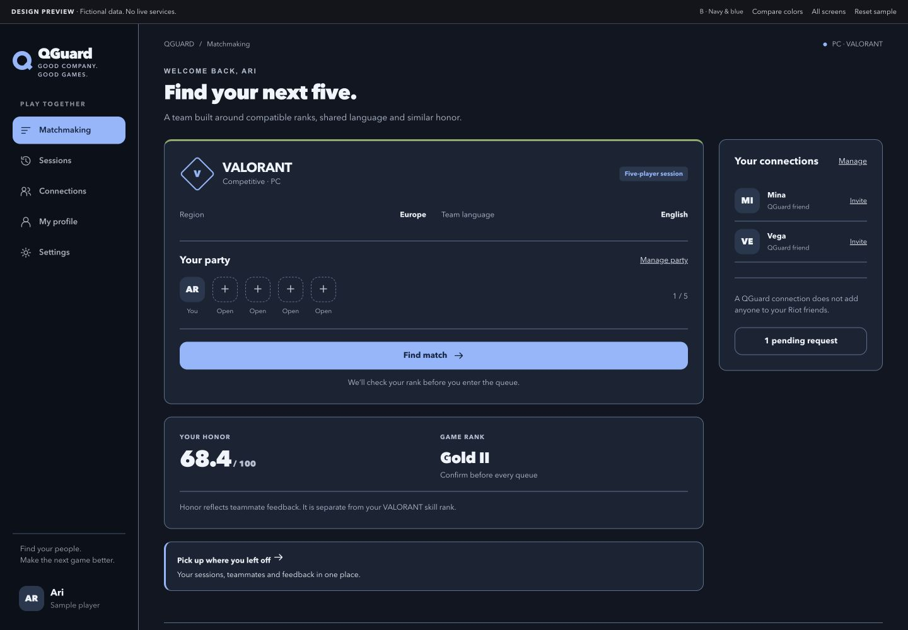
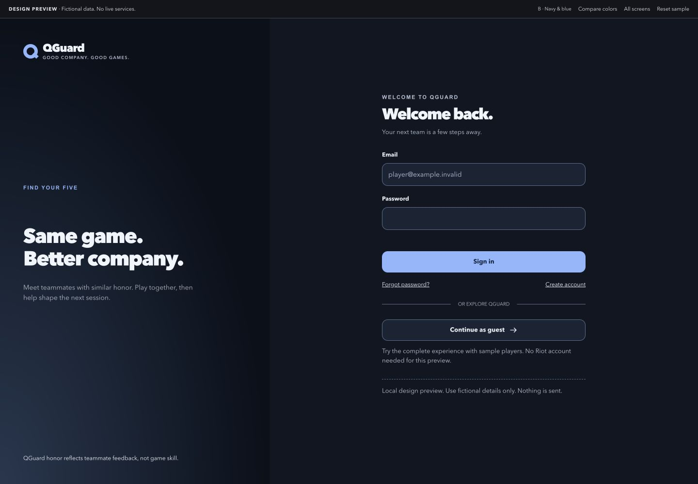
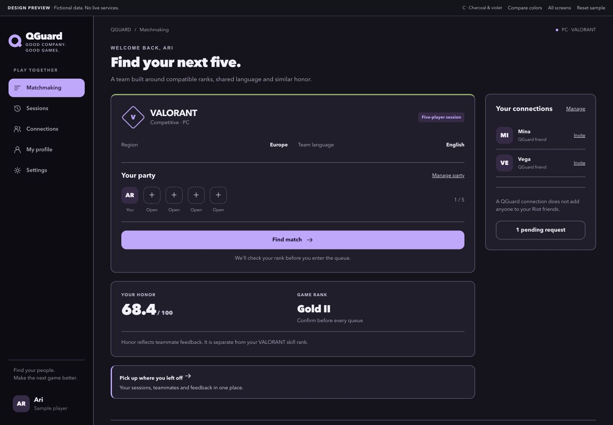
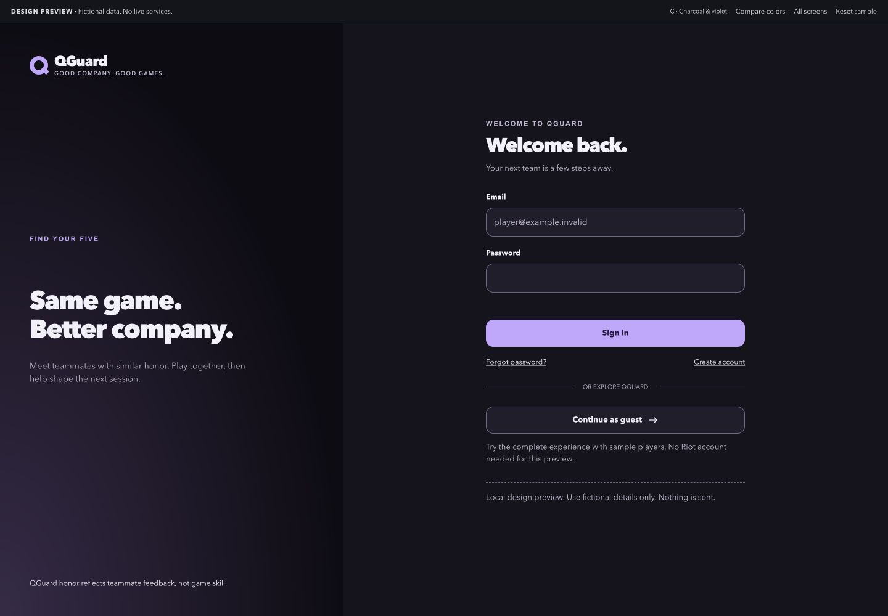

A · Forest & lime
Deep green surfaces with a pale lime accent.


Explore A full size ↗Matchmaking above, sign-in below. The layout and logo shapes are identical.
Deep green surfaces with a pale lime accent.


Explore A full size ↗Blue-black surfaces with an ice-blue accent.


Explore B full size ↗Charcoal-purple surfaces with a lavender accent.


Explore C full size ↗